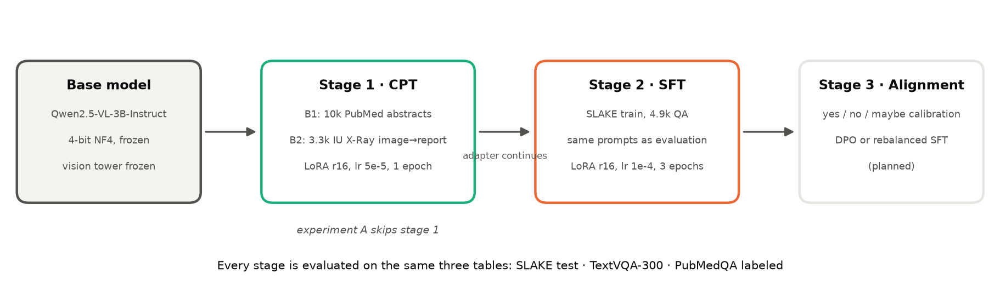
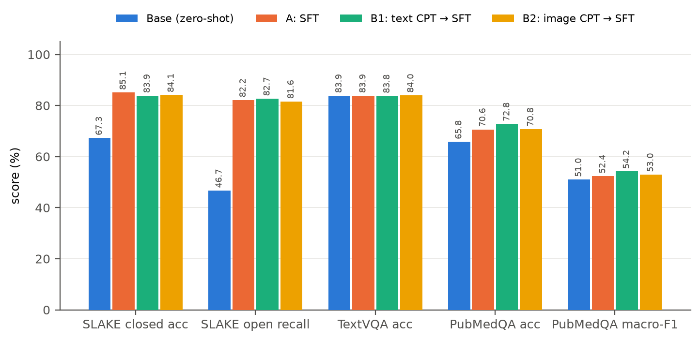
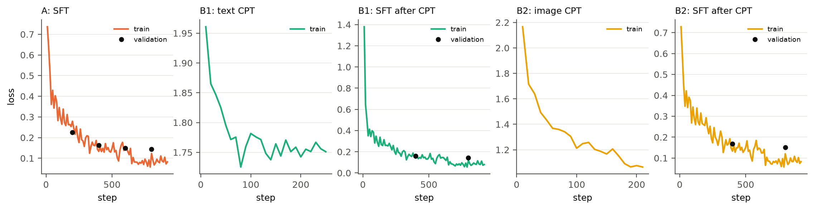
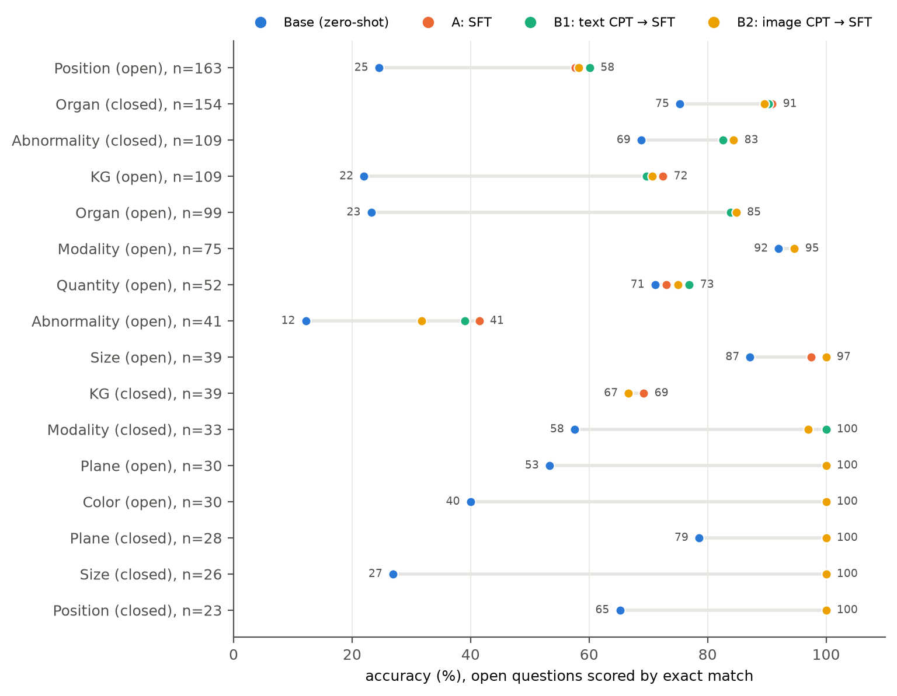
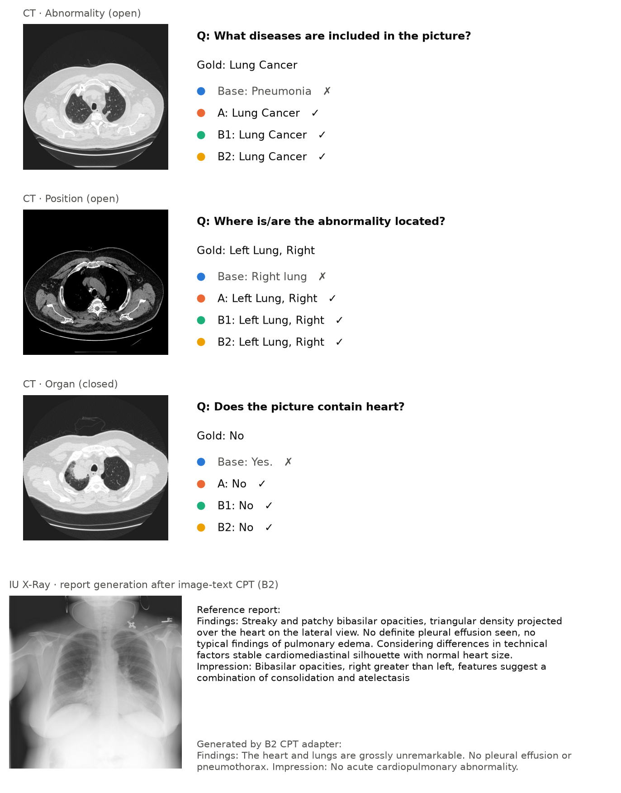
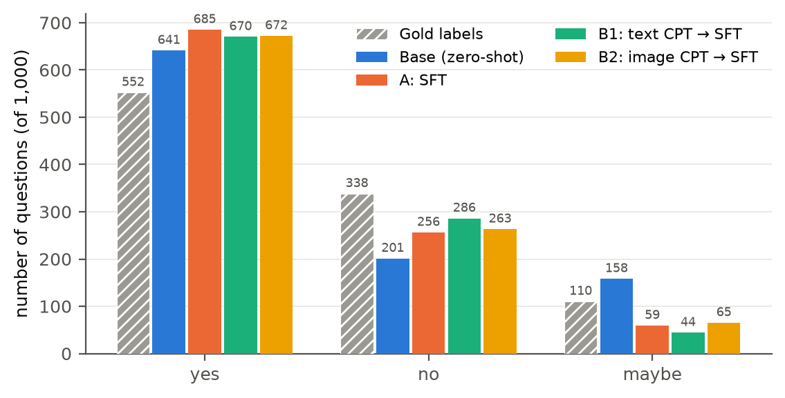

Topic 6 · Task 1.3 · Draft v0.2 · 16 September 2026
Parameter-Efficient Continued Pre-training and Instruction Tuning of a Medical Vision-Language Model
Abstract
Open-weight vision-language models in the 2–7B range answer general visual questions well but lag on medical images. This project studies a parameter-efficient adaptation pipeline, continued pre-training (CPT) followed by LoRA/QLoRA supervised fine-tuning (SFT), for Qwen2.5-VL-3B-Instruct, with three fixed evaluation tables: medical VQA (SLAKE), general-ability retention (a TextVQA subset) and answer reliability (PubMedQA).
QLoRA SFT on 4.9k SLAKE questions raises closed-question accuracy from 67.3 to 89.2 and open-question recall from 46.7 to 82.2 with no measurable loss on TextVQA. A text-only CPT stage on 10k PubMed abstracts does not transfer to image questions (SLAKE unchanged within ±0.6) but improves text-only medical reasoning (PubMedQA +2.2). An image-text CPT stage on 3.5k IU X-Ray image-report pairs learns the radiology report style but not the findings, and leaves SLAKE unchanged (closed 88.7) while lowering open lesion questions. In this regime, a 3B model with a frozen vision tower and a few thousand CPT examples, the CPT stage does not contribute to the primary metric. The residual errors concentrate in lesion identification and spatial localisation, and a persistent "yes" bias on PubMedQA is identified as the target for the alignment stage. All adapters, data-generation scripts, evaluation code and configurations are released for one-command reproduction.
1Introduction
Large VLMs such as Qwen2.5-VL and LLaVA are trained on web-scale natural images. Radiology and pathology images are rare in that data, so out of the box these models mislabel organs, confuse modalities and hedge poorly on medical questions. Full fine-tuning of even a 3B model is out of reach for a single consumer GPU, which motivates parameter-efficient methods: low-rank adapters (LoRA) and their 4-bit variant (QLoRA) train under 2% of the parameters and fit on a 16 GB card.
Task 1.3 of the course asks for a complete pipeline on a 2–7B open VLM: (1) continued pre-training on medical corpora, (2) LoRA/QLoRA instruction tuning, (3) an alignment step, with four deliverables: data-generation scripts, the CPT/SFT pipeline with adapters, evaluation sets with model cards, and a report with reproducible configurations.
This report makes the following contributions:
- A reproducible three-table evaluation protocol (medical VQA, general retention, reliability) shared by every experiment, with prompts fixed once and used identically for training-data generation and evaluation.
- A controlled comparison of SFT alone versus CPT followed by SFT, on the same base model, adapter rank, learning schedule and evaluation seed.
- Evidence that neither text-only nor small-scale image-text CPT transfers to image questions when the vision tower is frozen, with an error analysis of why.
- A question-type analysis that separates "vocabulary alignment" gains from genuine gains in medical perception.
3Method
3.1 Pipeline overview
Each stage produces a LoRA adapter on the same frozen 4-bit base. Stage 2 is initialised from the stage-1 adapter and continues training the same low-rank matrices, so the final artefact is a single 120 MB adapter. Experiment A skips stage 1; experiments B1 and B2 differ only in the stage-1 corpus.

3.2 Base model
Qwen2.5-VL-3B-Instruct (Apache-2.0): a 3.75B-parameter model with a native-resolution ViT, an MLP projector and a Qwen2.5 decoder. It sits in the 2–7B range the task requires, fits on a 16 GB T4 in 4-bit with room for activations, and already follows short-answer instructions, which makes zero-shot baselines meaningful.
3.3 Parameter-efficient training (QLoRA)
- Base weights quantised to 4-bit NF4 with double quantisation (bitsandbytes); LoRA matrices and optimiser states in fp16.
- LoRA on every linear layer of the language model, rank 16, α = 32, dropout 0.05. The vision tower and projector are frozen in all experiments, so any change in behaviour is attributable to the LLM side.
- Gradient checkpointing, effective batch 16 (2 × 8 accumulation), cosine schedule, seed 42. Training uses LLaMA-Factory; one YAML per experiment under
configs/.
3.4 Stage 1a: text-only CPT (B1)
Causal-LM loss on 10,000 PubMedQA pqa_artificial documents (question, abstract context and long answer, concatenated), packed into 1024-token sequences. Learning rate 5e-5 (half of SFT), one epoch. The evaluation split pqa_labeled is never used for training.
3.5 Stage 1b: image-text CPT (B2)
Caption-style alignment in the sense of LLaVA-Med stage 1: the input is a frontal chest X-ray plus a fixed instruction ("Write the radiology report for this chest X-ray."), the target is the report's Findings and Impression sections, and the loss is computed on the report tokens only. Implemented as an SFT-format dataset so that images are consumed; hyper-parameters as in 3.4. Corpus: IU X-Ray; CheXpert Plus is the planned scale-up.
3.6 Stage 2: instruction tuning (SFT)
SLAKE English training questions converted to a two-turn chat format with the same prompt templates used at evaluation time:
- closed questions:
{question} Answer with yes or no only. - open questions:
{question} Answer with a single word or short phrase.
Learning rate 1e-4, three epochs, images resized to at most 512 × 512 pixels, validation loss on the SLAKE validation split every 400 steps.
3.7 Stage 3: alignment planned
The PubMedQA results show a stable over-prediction of "yes" and under-prediction of "maybe". The planned alignment step is DPO on preference pairs built from PubMedQA pqa_artificial (preferred: the gold label; rejected: the model's over-confident answer), evaluated on pqa_labeled macro-F1 and the maybe rate. A label-rebalanced SFT is the cheaper alternative and will be tried first.
4Data and Experimental Setup
4.1 Datasets
| Dataset | Role | Size used | Licence / access |
|---|---|---|---|
| SLAKE (English) | SFT training; validation loss; test set for medical VQA | train 4,919 / val 1,053 / test 1,061 (416 closed, 645 open) | CC BY 4.0 |
| PubMedQA pqa_artificial | text CPT corpus | 10,000 documents | MIT |
| PubMedQA pqa_labeled | reliability evaluation (yes / no / maybe) | 1,000 | MIT, never trained on |
| TextVQA validation | general-ability retention | fixed 300-question sample, seed 42 | CC BY 4.0 |
| IU X-Ray (OpenI, Kaggle mirror) | image-text CPT prototype | 3,666 frontal images with non-empty reports; 3,483 train / 183 held out, split by report id | public |
| CheXpert Plus | image-text CPT at scale (planned, B3) | 5k → 20k studies | registered; download pending |
MIMIC-CXR was in the original task description; CheXpert Plus was chosen instead because it provides the same image-report structure with a lighter access process (registration rather than PhysioNet credentialing), and because it is the dataset shared with the Topic 1 teammate whose image-text alignment model will provide the data-filtering scores for B3.
Compliance rules fixed in the repository: SLAKE test and PubMedQA labeled are evaluation-only; patient-level splits are stored in git; controlled data and patient-level derived files never enter git or public Kaggle datasets.
4.2 Evaluation protocol
All three tables are produced by one script with greedy decoding, at most 32 new tokens, images capped at 512 × 512, on the fp16 base plus adapter. Predictions are stored per question for error analysis.
| Table | Data | Metrics |
|---|---|---|
| Medical VQA | SLAKE test | closed: accuracy after folding the answer to yes/no; open: exact match, token recall (LLaVA-Med convention) and token F1, after lower-casing and stripping punctuation and articles; both split by modality (X-Ray / CT / MRI) |
| General retention | TextVQA, 300 questions | VQA accuracy: min(matching annotators / 3, 1) |
| Reliability | PubMedQA labeled | accuracy, macro-F1 over {yes, no, maybe}, predicted-label distribution versus gold (552 / 338 / 110) |
4.3 Hardware and cost
All training and evaluation ran on Kaggle (one NVIDIA T4, 16 GB, fp16). A local RTX 3050 (4 GB) was used only for code and smoke tests.
| Run | Samples | Wall time | Throughput |
|---|---|---|---|
| Baseline evaluation, three tables | – | ≈ 1.5 h | SLAKE 1,061 q in 38 min |
| A: SLAKE SFT, 3 epochs | 4,919 × 3 | 4 h 28 min | 0.92 samples/s |
| B1: text CPT, 1 epoch | 10,000 packed | 2 h 39 min | 0.42 samples/s |
| B1: SFT after CPT | 4,919 × 3 | 4 h 07 min | 1.00 samples/s |
| B2: image-text CPT, 1 epoch | 3,483 image-report pairs | 1 h 19 min | 0.73 samples/s |
| B2: SFT after CPT | 4,919 × 3 | 4 h 38 min | 0.89 samples/s |
4.4 Experiment matrix
| ID | Stage 1 | Stage 2 | Question answered | Status |
|---|---|---|---|---|
| 0 | – | – | zero-shot starting point | done |
| A | – | SLAKE SFT | gain from instruction tuning alone | done |
| B1 | text CPT (PubMedQA) | SLAKE SFT | does text CPT transfer to image VQA | done |
| B2 | image-text CPT (IU X-Ray) | SLAKE SFT | does image-report CPT transfer | done |
| B3 | image-text CPT filtered by alignment score (CheXpert Plus) | SLAKE SFT | value of data-quality filtering | needs teammate interface |
| C | best of B | SFT + general VQA replay (5 % / 10 %) | forgetting mitigation | planned |
| D | ablations: rank 8 / 16 / 32, CPT size, learning rate, epochs | which factor matters | planned | |
| E | C + DPO (optional) | reliability | planned | |
5Results
5.1 Main table
| Metric | Base (0) | A: SFT | B1: text CPT → SFT | B2: image CPT → SFT |
|---|---|---|---|---|
| SLAKE closed acc | 67.31 | 89.18 | 88.70 | 88.70 |
| SLAKE open EM | 40.62 | 75.35 | 75.81 | 74.57 |
| SLAKE open recall | 46.73 | 82.17 | 82.72 | 81.61 |
| SLAKE open F1 | 47.53 | 81.56 | 82.07 | 80.88 |
| SLAKE closed, X-Ray / CT / MRI | 80.70 / 64.49 / 56.82 | 91.23 / 86.45 / 93.18 | 91.23 / 85.51 / 93.18 | 92.11 / 85.05 / 93.18 |
| TextVQA acc (retention) | 83.89 | 83.89 | 83.78 | 84.00 |
| PubMedQA acc | 65.80 | 70.60 | 72.80 | 70.80 |
| PubMedQA macro-F1 | 51.03 | 52.38 | 54.19 | 52.96 |
| PubMedQA predicted yes / no / maybe gold 552 / 338 / 110 | 641 / 201 / 158 | 685 / 256 / 59 | 670 / 286 / 44 | 672 / 263 / 65 |

Training curves: A, train loss 0.736 → 0.082, validation loss 0.225 → 0.145 and still decreasing at epoch 3; B1 CPT loss 1.96 → 1.75 over one epoch; B1 SFT validation loss 0.160 → 0.142; B2 CPT loss 2.17 → 1.06; B2 SFT validation loss 0.168 → 0.151. No NaN in any run.

5.2 Results by question type
SLAKE test accuracy by question type; open questions are scored by exact match.
| Type | n | Base | A | B1 | B2 | B1 − A | B2 − A |
|---|---|---|---|---|---|---|---|
| Position, open | 163 | 24.5 | 57.7 | 60.1 | 58.3 | +2.5 | +0.6 |
| Organ, closed | 154 | 75.3 | 90.9 | 90.3 | 89.6 | −0.6 | −1.3 |
| Abnormality, closed | 109 | 68.8 | 82.6 | 82.6 | 84.4 | 0.0 | +1.8 |
| Knowledge-graph, open | 109 | 22.0 | 72.5 | 69.7 | 70.6 | −2.8 | −1.8 |
| Organ, open | 99 | 23.2 | 84.8 | 83.8 | 84.8 | −1.0 | 0.0 |
| Modality, open | 75 | 92.0 | 94.7 | 94.7 | 94.7 | 0.0 | 0.0 |
| Quantity, open | 52 | 71.2 | 73.1 | 76.9 | 75.0 | +3.8 | +1.9 |
| Abnormality, open | 41 | 12.2 | 41.5 | 39.0 | 31.7 | −2.4 | −9.8 |
| Modality / Plane / Colour / Size, closed | 91 | 26.9–78.6 | 100.0 | 100.0 | 97.0–100.0 | 0.0 | −1.1 |
Per-question changes: base → A fixed 345 questions and broke 30; A → B1 fixed 15 and broke 14; A → B2 fixed 11 and broke 18. On the X-ray subset alone, the CPT modality, B2 versus A is 74.5 versus 76.5 on open questions and 92.1 versus 91.2 on closed.

5.3 What the image-text CPT stage learned
Before the SFT stage, the B2 CPT adapter was asked to write reports for three held-out IU X-Ray images. The generations are fluent, correctly structured radiology reports ("Findings: The heart is normal in size. The lungs are clear. No pneumothorax or pleural effusion. Impression: No acute cardiopulmonary abnormality."), but two of the three reference reports describe abnormalities, bibasilar opacities in one and a right pleural opacity with effusion in the other, and both were reported as normal. The CPT loss fell from 2.17 to 1.06 in one epoch, so the objective was learned; what was learned is the dominant report template. In the IU X-Ray training split 36 % of reports are normal, and abnormal reports are still written mostly as negations ("no effusion"), so a caption loss with a frozen vision tower rewards the template rather than the image.

6Analysis
Where SFT gains come from. The largest jumps after SFT are on Organ (+61.6 open), Knowledge-graph (+50.5) and the closed Modality / Plane / Colour / Size types (to 100 %). These are questions the base model could already perceive but answered with the wrong vocabulary or format ("the lungs" versus "lung", full sentences versus a phrase). SFT is largely vocabulary and format alignment here. Genuine perception questions moved less: Abnormality-open reaches only 41.5 % and Position-open 57.7 %. Remaining errors are left/right and upper/lower confusions and lesion-category mix-ups.
MRI: data, not capacity. MRI was the weakest modality at baseline (56.8) and becomes the strongest after SFT (93.2). SLAKE's training set is MRI-heavy, so the base model lacked domain exposure rather than the ability to read MR images.
Image-text CPT does not help, and slightly hurts lesion questions. B2 matches A on closed questions (88.7 versus 89.2) and is 0.6 below on open recall; per question it fixes 11 and breaks 18. The one type that moves beyond noise is Abnormality-open, down from 41.5 to 31.7 (four of 41 questions). This is consistent with Section 5.3: the CPT stage instilled a "normal chest" prior in the language model without changing the visual features, and that prior is a liability on lesion questions. The X-ray closed-question gain (+0.9, one question of 114) is within noise.
Taken together, B1 and B2 say that in this regime, a 3B model with a frozen vision tower and a few thousand CPT examples, the CPT stage contributes nothing to the primary metric; text CPT helps only text tasks. Two changes would be needed for a CPT stage to matter: unfreezing the vision tower (or LoRA on the ViT), or a label-balanced image-report corpus (CheXpert Plus sampled by finding). The report therefore treats A as the main result and B1 / B2 as controlled evidence on when CPT does not help.
Text CPT does not cross the modality gap. B1 and A are indistinguishable on SLAKE: every metric within ±0.6, per-question changes 15 fixed versus 14 broken. Two explanations, both plausible: the CPT corpus (abstract-level biomedical text) does not contain the localisation and lesion vocabulary SLAKE tests, and CPT updates only the LLM while the vision side is frozen. The CPT stage is nevertheless effective in its own domain: PubMedQA improves by 2.2 accuracy and 1.8 macro-F1.
Forgetting is not measurable with the current probe. TextVQA is unchanged after SFT and after CPT + SFT (83.89 / 83.89 / 83.78 / 84.00). Of the 300 answers, 81 differ from the base only in capitalisation. LoRA with a frozen vision tower and 3 epochs on 4.9k examples is a mild intervention, but the probe is also blunt: short-answer OCR questions are close to the SFT output format. A more sensitive general benchmark (open-ended description or an MMBench subset) is needed before experiment C can show anything. todo: second retention probe
Reliability worsens in a specific way. Every fine-tuning stage increases willingness to commit: predicted "maybe" falls from 158 (base) to 59 (A), 44 (B1) and 65 (B2) against 110 gold, while "no" → "yes" errors remain around 92. Accuracy rises because SLAKE-style short-answer training removes hedging, not because calibration improves. This is the concrete target for stage 3.

7Limitations and Planned Work
- Single seed per experiment; differences under ±1 point are treated as noise rather than tested statistically. todo: 2 seeds for A vs B
- Evaluation uses greedy decoding and string matching; open-ended recall rewards verbose answers. Exact match and F1 are reported alongside to bound this.
- The vision tower is frozen throughout. Unfreezing it, or LoRA on the ViT, is the natural next ablation for B2 but roughly doubles memory.
- Image-text CPT is prototyped on IU X-Ray (3.5k frontal images). CheXpert Plus is registered but not yet downloaded; the 5k → 20k scale-up and alignment-score filtering (B3) depend on it and on the teammate's scoring interface (week 6).
- Kaggle's 30 h/week GPU quota bounds throughput at roughly three full experiments per week; the college GPU server, once available, removes the 4-bit requirement (bf16, larger batch).
8Reproducibility
Every run is fully specified by one YAML (seed 42) and one evaluation tag; the JSON summaries in results/ are the exact files behind Section 5. Kaggle notebooks that execute the sequences below end-to-end are under notebooks/.
git clone https://github.com/AugustLoo/MedLoRA && cd MedLoRA
pip install -r requirements.txt
pip install "llamafactory[torch,metrics] @ git+https://github.com/hiyouga/LLaMA-Factory.git"
python data/download_slake.py && python data/convert_slake_sharegpt.py
python data/download_pubmedqa.py && python data/convert_pubmedqa_cpt.py --max 10000
python data/convert_iu_xray.py --root <IU_XRAY_DIR> --max 5000 # B2 only
bash train/eval_all.sh baseline # experiment 0
llamafactory-cli train configs/sft_slake_qlora.yaml # A
bash train/eval_all.sh sft_r16 outputs/sft_slake_qlora_r16
llamafactory-cli train configs/cpt_pubmed_qlora.yaml # B1
llamafactory-cli train configs/sft_after_cpt.yaml
bash train/eval_all.sh cpt_sft_r16 outputs/sft_after_cpt_r16
llamafactory-cli train configs/cpt_iu_qlora.yaml # B2
llamafactory-cli train configs/sft_after_cpt_iu.yaml
bash train/eval_all.sh cpt_iu_sft_r16 outputs/sft_after_cpt_iu_r16
python scripts/make_figures.py # figuresReferences todo: complete
- Qwen team. Qwen2.5-VL technical report, 2025.
- Hu et al. LoRA: Low-Rank Adaptation of Large Language Models, 2021.
- Dettmers et al. QLoRA: Efficient Finetuning of Quantized LLMs, 2023.
- Li et al. LLaVA-Med: Training a Large Language-and-Vision Assistant for Biomedicine in One Day, 2023.
- Liu et al. SLAKE: A Semantically-Labeled Knowledge-Enhanced Dataset for Medical Visual Question Answering, 2021.
- Jin et al. PubMedQA: A Dataset for Biomedical Research Question Answering, 2019.
- Singh et al. Towards VQA Models That Can Read (TextVQA), 2019.
- Demner-Fushman et al. Preparing a collection of radiology examinations for distribution and retrieval (OpenI / IU chest X-ray), 2016.
- Chambon et al. CheXpert Plus, 2024.
- Gururangan et al. Don't Stop Pretraining: Adapt Language Models to Domains and Tasks, 2020.
- Zheng et al. LlamaFactory: Unified Efficient Fine-Tuning of 100+ Language Models, 2024.